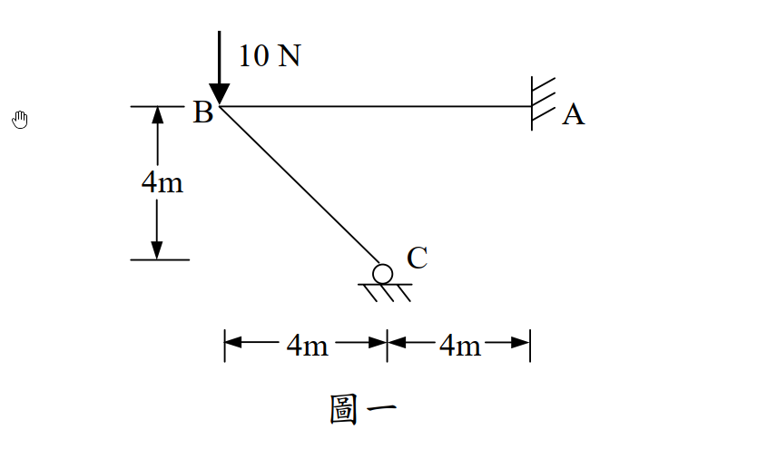

考題編號：[SA-2005-1]
主分類： SA-U2-1 能量法與虛功原理
副分類： 無
分析法： 最小功法
標籤： 最小功法 靜不定剛架 彎矩函數
1. 原始題目重述 (Problem Restatement)
一、剛架（frame）如圖一，其構架高為 4m，跨距為 8m，A 點為固接（fixed），C 點為滾接（roller）。若每根桿件為邊長 20 cm 之方形截面，且楊氏係數 $E = 10^6 \text{ N/cm}^2$，則當 B 點有一垂直載重 10 N 時，且不計軸力及剪力下，請以最小功法（least work）計算每根桿件之彎矩。（若以他法計算，則不予以計分）（25 分）

圖說：結構為 BA 桿（水平，長度 8m）與 BC 桿（斜向，水平及垂直投影皆為 4m）於 B 點剛接。A 點為固定端，C 點為水平滾支承。B 點承受垂直向下 10 N 之集中載重。
2. 考題核心精神與出題者意圖 (Core Concepts & Examiner's Intent)
- 最小功法之操作： 測驗考生能否正確選擇贅力（Redundant force），並寫出各桿件彎矩對該贅力之偏微分函數。
- 剛節點內力傳遞觀念： 本題最大的陷阱在於「C點的反力如何影響 BA 桿」。許多考生會誤以為 C 點反力直接作用在 BA 桿中點（距 B 點 4m 處），但實際上 C 點反力是經由 BC 桿傳遞至 B 節點，因此對 BA 桿而言，相當於在 B 端同時承受垂直力與彎矩。這考驗了對整體自由體圖與內力傳遞的深刻理解。
- 計算化簡與單位： 題目給定相同的截面尺寸與楊氏係數，暗示 $EI$ 為常數，在最小功法（令偏微分為零）的計算過程中可直接消去，無須帶入繁瑣的數值。
3. 解題戰略地圖與陷阱分析 (Strategic Roadmap & Trap Analysis)
- 靜不定度與贅力選擇： 結構有 A 點固接（3 個反力）與 C 點滾接（1 個反力），總反力數為 4，靜不定度為 1。選擇 C 點之垂直反力 $R_C$（向上）作為贅力。
- 座標系統設定：
- BC 桿：設座標 $s$ 從 C 點沿桿件向 B 點計算（$0 \le s \le 4\sqrt{2}$）。
- BA 桿：設座標 $x$ 從 B 點沿桿件向 A 點計算（$0 \le x \le 8$）。 - 建立彎矩函數 $M(s)$ 與 $M(x)$：
- 由 C 點截面法直接求得 BC 桿之彎矩函數。
- 利用整體自由體圖（取 $x$ 截面之左側結構），同時考慮 B 點載重 10 N 與 C 點反力 $R_C$ 對 BA 桿任一截面 $x$ 造成的彎矩。（陷阱迴避：不論 $x$ 大於或小於 4，$R_C$ 對 BA 桿截面的力臂始終與 $x$ 有關，不可在 $x=4$ 處分段） - 最小功法求解： 根據最小功原理，應變能 $U$ 對贅力 $R_C$ 之偏微分等於 C 點沿 $R_C$ 方向之位移。因 C 點為滾支承不沉陷，故 $\frac{\partial U}{\partial R_C} = 0$。積分求解出 $R_C$。
- 回代求各桿彎矩： 將求得之 $R_C$ 代回原彎矩函數，完成求解。
3.5 變數層次分析 (Variable Hierarchy Analysis)
最終目標
求出該靜不定剛架中，贅力 $R_C$ 的數值，以及每根桿件的彎矩函數 $M(x)$。
本題關鍵公式（依計算順序）
$$ \frac{\partial U}{\partial R_C} = \int \frac{M}{EI} \frac{\partial M}{\partial R_C} ds = 0 $$
$$ \Delta_{C, BC} = \int_{BC} \frac{M_{BC}}{EI} \frac{\partial M_{BC}}{\partial R_C} ds $$
$$ \Delta_{C, BA} = \int_{BA} \frac{M_{BA}}{EI} \frac{\partial M_{BA}}{\partial R_C} dx $$
$$ \boxed{\Delta_{C, BC}} + \boxed{\Delta_{C, BA}} = 0 $$
L1：題目直接給定
- $L_{BA}$ ∣ $8$ m ∣ 桿件 BA 長度
- $L_{BC}$ ∣ $4\sqrt{2}$ m ∣ 桿件 BC 長度 (由 4m 寬 4m 高得出)
- $P$ ∣ $10$ N ∣ B 點垂直向下集中載重
L2：需知識點推導
彎矩函數與能量偏微分
- $M_{BC}(s)$ ∣ $\frac{R_C}{\sqrt{2}} s$ ∣ BC 桿距 C 點 $s$ 處之內部彎矩 (以 C 點為原點) ∣
- $M_{BA}(x)$ ∣ $(R_C - 10)x - 4R_C$ ∣ BA 桿距 B 點 $x$ 處之內部彎矩 (以 B 點為原點) ∣
- $R_C$ ∣ $20 - 10\sqrt{2}$ N ∣ 解最小功方程式所得之 C 點垂直反力 ∣
L3：深層知識（不懂就卡住）
- 整體 FBD 取法 ∣ 在計算 BA 桿彎矩時，若取 $x$ 截面左側為自由體圖，該 FBD 將包含「整根 BC 桿」，因此不論 $x$ 在何處，C 點的 $R_C$ 反力都會對截面產生彎矩貢獻，不須在 $x=4$ 處將 BA 桿分段。 ∣
4. 步驟化詳細計算過程 (Step-by-Step Detailed Calculation)
Step 1：定義座標與贅力
設 C 點垂直向上之反力為 $R_C$（贅力）。
已知各桿件之 EI 皆相同且為常數，設為 $EI$。
-
BC 桿：原點設於 C，座標 $s$ 沿桿件指向 B，範圍 $0 \le s \le L_{BC}$。
水平投影 = 4m，垂直投影 = 4m，故桿長 $L_{BC} = \sqrt{4^2 + 4^2} = 4\sqrt{2} \text{ m}$。 -
BA 桿：原點設於 B，座標 $x$ 沿桿件指向 A，範圍 $0 \le x \le 8 \text{ m}$。
Step 2：推導各桿件彎矩函數 $M$ 及 $\frac{\partial M}{\partial R_C}$
策略註解：為簡化計算，彎矩符號採用「使桿件下方/內側受拉為正」，在能量法中 $M^2$ 無論正負皆不影響結果，但列式必須一致。
1. BC 桿 ($0 \le s \le 4\sqrt{2}$)
取 C 點至 $s$ 截面之自由體圖，僅受 C 點反力 $R_C$ 作用。
反力 $R_C$ 對截面產生之彎矩力臂為其水平距離 $s \cos 45^\circ = \frac{s}{\sqrt{2}}$。
$$ M_{BC}(s) = R_C \cdot \left(\frac{s}{\sqrt{2}}\right) = \frac{R_C}{\sqrt{2}} s $$
$$ \frac{\partial M_{BC}}{\partial R_C} = \frac{s}{\sqrt{2}} $$
2. BA 桿 ($0 \le x \le 8$)
取 BA 桿上距離 B 點 $x$ 處之截面，並取該截面「左側」全部結構為自由體圖。
此自由體圖包含：整根 BC 桿、B 節點、以及 BA 桿從 0 到 $x$ 之部分。
作用於此自由體圖之外力僅有：
- B 點 (水平距離 $x$ ) 之向下集中載重 10 N
- C 點 (水平距離 $|4-x|$，但其作用線位置恆為距 B 點 4m) 向上之反力 $R_C$
對 $x$ 截面取彎矩平衡（以左側受向上力產生正彎矩為例）：
$$ M_{BA}(x) = -10 \cdot x + R_C \cdot (x - 4) = (R_C - 10)x - 4R_C $$策略註解：也可將 BC 桿之受力傳遞至 B 點，BC 桿對 B 節點提供向上力 $R_C$ 及逆時針彎矩 $4R_C$。再以此作為 BA 桿之端點力計算，亦得相同結果。且因為 BA 桿中段無其他載重，此函數適用於 $0 \le x \le 8$ 全段。
$$ \frac{\partial M_{BA}}{\partial R_C} = x - 4 $$
Step 3：應用最小功法
根據卡式第二定理（最小功法），系統應變能對贅力 $R_C$ 之偏微分等於 C 點位移（為 0）：
$$ \frac{\partial U}{\partial R_C} = \int \frac{M}{EI} \frac{\partial M}{\partial R_C} ds = 0 $$
$$ \frac{1}{EI} \left[ \int_0^{4\sqrt{2}} M_{BC} \frac{\partial M_{BC}}{\partial R_C} ds + \int_0^8 M_{BA} \frac{\partial M_{BA}}{\partial R_C} dx \right] = 0 $$
因 $EI$ 不為零，故括號內積分總和必為 0。
積分項 1：BC 桿
$$ \int_0^{4\sqrt{2}} \left( \frac{R_C}{\sqrt{2}} s \right) \left( \frac{s}{\sqrt{2}} \right) ds = \frac{R_C}{2} \int_0^{4\sqrt{2}} s^2 ds $$
$$ = \frac{R_C}{2} \left[ \frac{s^3}{3} \right]_0^{4\sqrt{2}} = \frac{R_C}{2} \cdot \frac{128\sqrt{2}}{3} = \frac{64\sqrt{2}}{3} R_C $$
積分項 2：BA 桿
$$ \int_0^8 \left[ (R_C - 10)x - 4R_C \right] (x - 4) dx $$
令 $u = x - 4$，則 $dx = du$，積分上下界變為 $-4$ 至 $4$。
$x = u + 4$ 代入原式：
$$ (R_C - 10)(u + 4) - 4R_C = (R_C - 10)u + 4R_C - 40 - 4R_C = (R_C - 10)u - 40 $$
原積分式轉換為：
$$ \int_{-4}^4 \left[ (R_C - 10)u - 40 \right] \cdot u \, du = \int_{-4}^4 \left[ (R_C - 10)u^2 - 40u \right] du $$
由於 $-40u$ 為奇函數，在對稱區間 $[-4, 4]$ 積分為 0；$(R_C - 10)u^2$ 為偶函數：
$$ = 2 \int_0^4 (R_C - 10)u^2 du = 2(R_C - 10) \left[ \frac{u^3}{3} \right]_0^4 = 2(R_C - 10) \cdot \frac{64}{3} = \frac{128}{3} (R_C - 10) $$
Step 4：求解 $R_C$
將兩積分項相加並令其為零：
$$ \frac{64\sqrt{2}}{3} R_C + \frac{128}{3} (R_C - 10) = 0 $$
等號兩邊同乘 $\frac{3}{64}$：
$$ \sqrt{2} R_C + 2(R_C - 10) = 0 $$
$$ (\sqrt{2} + 2)R_C = 20 $$
$$ R_C = \frac{20}{2 + \sqrt{2}} = \frac{20(2 - \sqrt{2})}{4 - 2} = 10(2 - \sqrt{2}) = 20 - 10\sqrt{2} \text{ N} $$
Step 5：整理每根桿件之彎矩函數
將求得之 $R_C = 10(2 - \sqrt{2})$ 代回 Step 2 的彎矩函數中：
1. BC 桿彎矩函數：
$$ M_{BC}(s) = \frac{10(2 - \sqrt{2})}{\sqrt{2}} s = 10(\sqrt{2} - 1) s \quad \text{(N-m)} \quad (\text{其中 } 0 \le s \le 4\sqrt{2} \text{ m}) $$
(C 點彎矩為 0，B 點處彎矩為 $40(2 - \sqrt{2}) \approx 23.43 \text{ N-m}$)
2. BA 桿彎矩函數：
$$ M_{BA}(x) = (10(2 - \sqrt{2}) - 10)x - 4(10(2 - \sqrt{2})) $$
$$ \boxed{ M_{BA}(x) = 10(1 - \sqrt{2})x - 40(2 - \sqrt{2}) \quad \text{(N-m)} \quad (\text{其中 } 0 \le x \le 8 \text{ m}) } $$
(B 點處彎矩為 $-40(2 - \sqrt{2}) \approx -23.43 \text{ N-m}$，與 BC 桿在節點平衡；A 點處彎矩為 $-40\sqrt{2} \approx -56.57 \text{ N-m}$)
5. 關鍵爭議點與進階探討 (Critical Issues & Advanced Discussion)
- BA 桿彎矩公式的連續性： 在許多同學初學時，看到 C 點對應到 BA 桿中點 ($x=4$)，會直覺認為 BA 桿的彎矩方程式必須在 $x=4$ 處斷開並分段寫出。然而本題結構特性為「剛架」，C 點的反力只能藉由 BC 桿傳遞至唯一的相接點 B，因此對 BA 桿而言，唯一的受力點就是 B 端。這使得 BA 桿的彎矩函數 $M(x)$ 是一條從 0 到 8 的單一線性函數，無須分段。
- 剛度 $EI$ 提供數值的陷阱： 題目刻意給出斷面邊長 20cm 與 $E=10^6 \text{ N/cm}^2$，企圖引導考生進行繁瑣的數值代入。但熟練能量法的考生會知道，在計算「位移為零」的偏微分方程時，常數 $EI$ 可直接在等式兩邊消去，完全不需代入數值，這大幅降低了計算錯誤的風險。